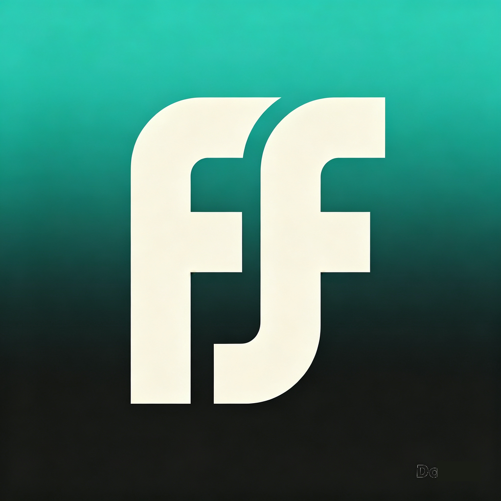

Focelf
健康觀察夥伴
Your Health Observation Partner
記錄飲食、運動、體重、睡眠 — 私隱優先，本機為主。
Log meals, workouts, weight & sleep — privacy-first, on-device.
App 功能 · Features
- 飲食記錄：三餐、卡路里、營養一目了然
- AI 食物偵測：影餐牌 / 掃條碼一鍵記錄
- 每日健康任務：飲水、稱重、運動、睡眠
- 運動方案與記錄（NASM OPT、HIIT、跑步）
- 體重 / 體脂 / 睡眠追蹤、體態私密相簿（Face ID 鎖）
- 私隱優先：相片只存你嘅裝置，唔上傳